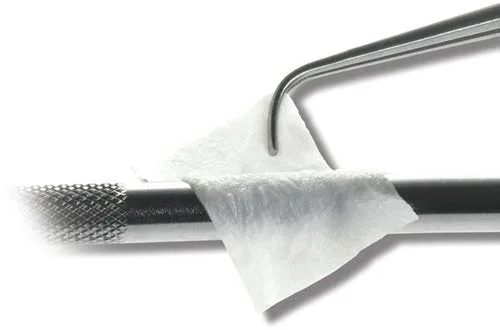
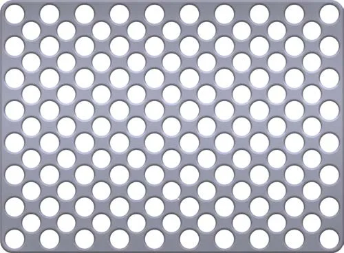

نسخه استخراجشده؛ ترجمه یا تأیید علمی انجام نشده است. وضعیت: captured
GBR و GTR بر یک اصل مشترک استوارند: استفاده از ممبران بریر برای حفظ فضا روی نقص، که همزمان دو کار میکند:
۱. تسهیل ورود سلولهای استئوژنیک به فضای نقص.
۲. جلوگیری از مهاجرت سلولهای نامطلوب از بافت نرم پوشاننده به داخل زخم.
و اینجاست که واژهی کلیدی این درس میآید: رقابت. ممبرانی که درست انتخاب و درست قرار داده شود، این رقابت را کاهش میدهد.
ماهیت رقابت چیست؟ سلولهای بافت نرم بسیار سریعتر از سلولهای استخوانساز حرکت میکنند. اگر مانعی نباشد، فضای نقص را پیش از رسیدن سلولهای استخوانی پر میکنند — و نتیجه بافت فیبروزی میشود، نه استخوان.
پس ممبران یک پوشش محافظ صرف نیست؛ یک ابزار مدیریت زمان است: به کندترین بازیگر فرصت میدهد به مقصد برسد.
و توجه کن که هر دو عبارت «انتخاب درست» و «قرارگیری درست» در این جمله آمدهاند — یعنی ممبران درست در جای نادرست، همانقدر بیفایده است. از یونیت ۱۴ به یاد بیاور: ممبران باید فقط دیوارهی غایب را بپوشاند و از سطح داخلی؛ گذاشتن آن روی سطح بیرونی دیوارهی باقیمانده، خونرسانی و ترمیم را به خطر میاندازد.
زیر ممبران چه میگذرد؟ بازسازی شامل تکثیر عروق خونی تازه (آنژیوژنز) و مهاجرت سلولهای استخوانساز (استئوژنز) است. ابتدا لختهی خونی تشکیل میشود که با استخوان فیبروزی جایگزین میگردد — مادهای که استخوان بافتهشده (woven bone) نام دارد، سازماندهی کلاژنش نامنظم و از نظر مکانیکی ضعیف است. بعدها این ماده از راه بازسازی طبیعی استخوان به استخوان لاملار سازمانیافته و باربر تبدیل میشود.
یعنی آنچه در پایان دورهی ترمیم زیر ممبران میبینی، هنوز استخوان نهایی نیست — بلوغ مکانیکی مرحلهی جداگانهای است.
و یک تمایز اصطلاحی: GBR و GTR اغلب بهجای هم و نادرست به کار میروند. GTR به بازسازی دستگاه نگهدارندهی پریودنتال — سمنتوم، لیگامان پریودنتال و استخوان آلوئولار — برای حفظ دندان طبیعی میپردازد. و نکتهی تاریخی: مفهوم GBR نخستین بار در ۱۹۵۹ توصیف شد، آن هم زمانی که ممبرانهای سلول-مسدودکننده برای فیوژن ستون فقرات به کار رفتند.

ممبران جذبشونده — کلاژن. مزیت اصلیاش روشن است: معمولاً به جراحی دوم برای برداشتن نیاز ندارد. و مزیت عملی دیگرش: کار کردن با آن آسان است و بهخوبی با توپوگرافی آلوئول تطبیق مییابد.
و یک عدد کاربردی: ممبرانهای کلاژن گسترشیافته در ۴ تا ۶ ماه جذب میشوند و برای نقصهای استخوانی بزرگتر که دورهی ترمیم طولانیتری میخواهند به کار میروند.
یعنی انتخاب ممبران هم مانند انتخاب ماده، یک تطبیق زمانی است: مدت ماندگاری ممبران باید با مدت ترمیم نقص بخواند.
ممبران غیرجذبشونده. مزیتش کنترل بیشتر بر مدت ماندگاری است. ولی هزینه دارد: عمل برداشتن، خطر موربیدیتی محل جراحی را بالا میبرد و بافتهای بازسازیشده را در معرض آسیب و آلودگی باکتریایی پس از جراحی قرار میدهد. با این حال در موقعیتی مثل افزایش ریج پیش از ایمپلنت، که ممبران باید تا پایان ترمیم کافی کارکردش را حفظ کند و بعد برداشته شود، همین کنترل ارزش هزینه را دارد.
e-PTFE در برابر d-PTFE — یک تفاوت تعیینکننده:
e-PTFE منافذ بزرگتری (۵ تا ۲۰ میکرومتر) دارد که چسبندگی محکم بافت نرم را ممکن میکند — و به همین دلیل برداشتنش معمولاً نیازمند دیسکشن تیز است. مشکل بزرگترش هنگام اکسپوز شدن است: باکتری از همین منافذ عبور میکند.
d-PTFE با چگالی بالا و اندازهی منفذ کمتر از ۰٫۳ میکرومتر برای حل همین مشکل عبور باکتری ساخته شد: حتی در حالت اکسپوز، باکتری را پشت خود نگه میدارد. و چون بافت به سطحش رشد نمیکند، برداشتنش هم سادهتر است. مزیت بزرگش این است که میتواند در معرض قرار بگیرد (اکسپوز بماند) — و در نتیجه بافت نرم و موقعیت خط موکوژنژیوال حفظ میشود.
به این مزیت آخر دقت کن: از یونیت ۱۳ میدانی که پیش بردن فلپ برای بستهشدن اولیه، خط موکوژنژیوال را جابهجا میکند. ممبرانی که اکسپوز بماند، آن هزینه را حذف میکند.

نوع سؤال: ساخت کلمه · 10 خانه
حروف منبع: گ · ت · ا · ف · س · ش · ت · ی · ر · ه